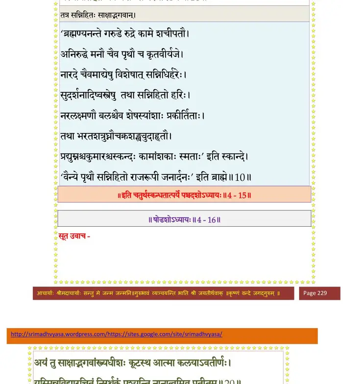

स्कन्ध 4 · अध्याय 15
श्लोक १
विप्रा ऊचुः–
अत्र तु प्रथमो राज्ञां पुमान् प्रथयिता यशः ।
पृथुर्नाम महाराजा भविष्यति पृथुश्रवाः।। १ ।।
अत्र तु प्रथमो राज्ञां पुमान् प्रथयिता यशः ।
पृथुर्नाम महाराजा भविष्यति पृथुश्रवाः।। १ ।।
श्लोक २
इयं च देवी सुदती गुणभूषणभूषणा ।
अर्चिर्नाम वरारोहा पृथुमेवावरुन्धती।। २ ।।
अर्चिर्नाम वरारोहा पृथुमेवावरुन्धती।। २ ।।
श्लोक ३
एष साक्षाद्धरेरंशो जातो लोकरिरक्षया ।
इयं च तत्परा हि श्रीरनुजज्ञेऽनपायिनी।। ३ ।।
इयं च तत्परा हि श्रीरनुजज्ञेऽनपायिनी।। ३ ।।
श्लोक ४
मैत्रेय उवाच–
प्रशंसन्ति स्म तं विप्रा गन्धर्वप्रमुखा जगुः ।
मुमुचुः सुमनोधाराः सिद्धा नृत्यन्ति तत्स्त्रियः।। ४ ।।
प्रशंसन्ति स्म तं विप्रा गन्धर्वप्रमुखा जगुः ।
मुमुचुः सुमनोधाराः सिद्धा नृत्यन्ति तत्स्त्रियः।। ४ ।।
श्लोक ५
शङ्खतूर्यमृदङ्गाद्या नेदुर्दुन्दुभयो दिवि ।
तत्र सर्व उपाजग्मुर्देवर्षिपितृणां गणाः।। ५ ।।
तत्र सर्व उपाजग्मुर्देवर्षिपितृणां गणाः।। ५ ।।
श्लोक ६
ब्रह्मा जगद्गुरुर्देवः सहागत्य सुरेश्वरैः ।
वैन्यस्य दक्षिणे हस्ते दृष्ट्वा चिह्नं गदाभृतः।। ६ ।।
वैन्यस्य दक्षिणे हस्ते दृष्ट्वा चिह्नं गदाभृतः।। ६ ।।
श्लोक ७
पादयोररविन्दं च तं वै मेने हरेः कलाम् ।
यस्याप्रतिहतं चक्रमंशस्य परमेष्ठिनः।। ७ ।।
यस्याप्रतिहतं चक्रमंशस्य परमेष्ठिनः।। ७ ।।
भागवततात्पर्यनिर्णय

श्लोक ८
तस्याभिषेक आरब्धो ब्राह्मणैर्ब्रह्मवादिभिः ।
आभिषेचनिकान्यस्मै आजह्रुः सर्वतो जनाः।। ८ ।।
आभिषेचनिकान्यस्मै आजह्रुः सर्वतो जनाः।। ८ ।।
श्लोक ९
सरित्समुद्रा गिरयो नागा गावः खगा मृगाः ।
द्यौः क्षितिः सर्वभूतानि समाजह्रुरुपायनम्।। ९ ।।
द्यौः क्षितिः सर्वभूतानि समाजह्रुरुपायनम्।। ९ ।।
श्लोक १०
सोऽभिषिक्तो महाराजः सुवासाः साध्वलङ्कृतः ।
पत्न्याऽर्चिषाऽलङ्कृतया विरेजेऽग्निरिवापरः।। १० ।।
पत्न्याऽर्चिषाऽलङ्कृतया विरेजेऽग्निरिवापरः।। १० ।।
श्लोक ११
तस्मै जहार धनदो हैमं वीर वरासनम् ।
वरुणः सलिलस्रावमातपत्रं शशिप्रभम्।। ११ ।।
वरुणः सलिलस्रावमातपत्रं शशिप्रभम्।। ११ ।।
श्लोक १२
वायुश्च वालव्यजने धर्मः कीर्तिमयीं स्रजम् ।
इन्द्रः किरीटमुत्कृष्टं दण्डं संयमनं यमः।। १२ ।।
इन्द्रः किरीटमुत्कृष्टं दण्डं संयमनं यमः।। १२ ।।
श्लोक १३
ब्रह्मा ब्रह्ममयं वर्म भारती हारमुत्तमम् ।
हरिस्सुदर्शनं चक्रं तत्पत्न्यव्याहतां श्रियम्।। १३ ।।
हरिस्सुदर्शनं चक्रं तत्पत्न्यव्याहतां श्रियम्।। १३ ।।
श्लोक १४
दशचन्द्रमसिं रुद्रः शतचन्द्रं तथाऽम्बिका ।
सोमोऽमृतमयानश्वांस्त्वष्टा रूपाश्रयं रथम्।। १४ ।।
सोमोऽमृतमयानश्वांस्त्वष्टा रूपाश्रयं रथम्।। १४ ।।
श्लोक १५
अग्निराजगवं चापं सूर्यो रश्मिमयानिषून् ।
भूः पादुके योगमये द्यौः पुष्पबलिमन्वहम्।। १५ ।।
भूः पादुके योगमये द्यौः पुष्पबलिमन्वहम्।। १५ ।।
श्लोक १६
नाट्यं सुगीतं वादित्रमन्तर्धानं च खेचराः ।
ऋषयश्चाशिषः सत्यां समुद्रः शङ्खमात्मजम्।। १६ ।।
ऋषयश्चाशिषः सत्यां समुद्रः शङ्खमात्मजम्।। १६ ।।
श्लोक १७
सिन्धवः पर्वता नद्यो रथवीथीर्महात्मनः ।
सूतोऽथ मागधो बन्दी संस्तोतुमुपतस्थिरे।। १७ ।।
सूतोऽथ मागधो बन्दी संस्तोतुमुपतस्थिरे।। १७ ।।
श्लोक १८
स्तावकांस्तानभिप्रेत्य पृथुर्वैन्यः प्रतापवान् ।
मेघनिर्ह्रादया वाचा प्रहसन्निदमब्रवीत्।। १८ ।।
मेघनिर्ह्रादया वाचा प्रहसन्निदमब्रवीत्।। १८ ।।
श्लोक २०
पृथुरुवाच–
हे सूत हे मागध सौम्य बन्दिन् लोकेऽधुनाऽस्पष्टगुणस्य मे स्यात् ।
किमाश्रयो मे स्तव एष योज्यतां मा मय्यभूवन् वितथा गिरो वः।।
तस्मात् परोक्षेऽस्मदुपाश्रितान्यलं करिष्यथ स्तोत्रमपीड्यवाचः ।
सत्युत्तमश्लोकगुणानुवादे जुगुप्सितं न स्तवयन्ति सभ्याः।। २० ।।
हे सूत हे मागध सौम्य बन्दिन् लोकेऽधुनाऽस्पष्टगुणस्य मे स्यात् ।
किमाश्रयो मे स्तव एष योज्यतां मा मय्यभूवन् वितथा गिरो वः।।
तस्मात् परोक्षेऽस्मदुपाश्रितान्यलं करिष्यथ स्तोत्रमपीड्यवाचः ।
सत्युत्तमश्लोकगुणानुवादे जुगुप्सितं न स्तवयन्ति सभ्याः।। २० ।।
श्लोक २१
महद्गुणानात्मनि कर्तुमिच्छन् कः स्तावकैः स्तावयते सतोऽपि ।
स वै भविष्यन्निति विप्रलब्धो जनापहासं कुमतिर्न वेद।। २१ ।।
स वै भविष्यन्निति विप्रलब्धो जनापहासं कुमतिर्न वेद।। २१ ।।
श्लोक २२
प्रभवो ह्यात्मनः स्तोत्रं जुगुप्सन्त्यपि विश्रुताः ।
ह्रीमन्तः परमोदाराः पौरुषं वा विगर्हितम्।। २२ ।।
ह्रीमन्तः परमोदाराः पौरुषं वा विगर्हितम्।। २२ ।।
श्लोक २३
वयं त्वविदिता लोके सूताद्या अपि वरीमभिः ।
कर्मभिः कथमात्मानं गापयिष्याम बालवत्।। २३ ।।
कर्मभिः कथमात्मानं गापयिष्याम बालवत्।। २३ ।।
।। इति श्रीमद्भागवते चतुर्थस्कन्धे पञ्चदशोऽध्यायः ।।